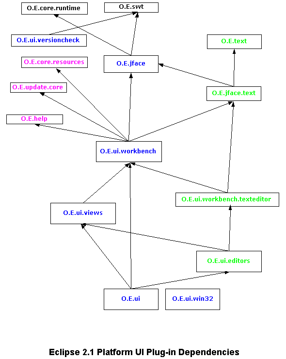

Generic workbench structure
Last modified July 21, 2003
Table of contents:
Existing plug-in and API structure of 2.1 Platform
UI
Proposed plug-in and API restructuring plan for
Platform UI
Proposed plug-in and API structure of 3.0 Platform UI
Existing plug-in and API structure of 2.1
Platform UI
The big picture:

Prior to 2.1, the org.eclipse.ui plug-in was the monolithic implementation of
the Eclipse Platform UI. The above picture reflects the restructuring that done
for 2.1 which introduced several new plug-ins:
- org.eclipse.jface
- org.eclipse.ui.workbench
- org.eclipse.ui.views
- org.eclipse.text
- org.eclipse.jface.text
- org.eclipse.ui.workbench.texteditor
- org.eclipse.ui.editors
The workbench is in principal independent from text editors (org.eclipse.text,
org.eclipse.jface.text, org.eclipse.ui.workbench.texteditor, and
org.eclipse.ui.editors plug-ins). The exceptions are:
- SystemSummaryEditor is a special purpose text editor defined in the
org.eclipse.ui.editors plug-in and used by the workbench's about dialog.
- The workbench internal class SelectionEnabler refers to ITextSelection.
- The definition of extension points and the declaration of extensions for
which the text editor plug-ins partially use org.eclipse.ui
- The usage of the workbench's preference store and logging facilities by
the text editor plug-ins
- org.eclipse.ui re-exports text editor plug-ins.
(3) through (5) were done to provide compatibility for clients dependent on
org.eclipse.ui before it was split up. Sustaining compatibility also required
that API package names be kept stable, and this resulted in places where classes
in the same package come from several "package extensions" distributed
across plug-ins. The 3 instance of this are:
- Package org.eclipse.jface.text is declared in the org.eclipse.jface.text
plug-in and extended in the org.eclipse.text plug-in.
- Package org.eclipse.ui.actions is declared in the org.eclipse.ui.workbench
plug-in and extended in the org.eclipse.ui.views plug-in.
- Package org.eclipse.ui.texteditor is declared in the
org.eclipse.ui.workbench.texteditor plug-in and extended in the
org.eclipse.ui.editors plug-in.
Existing API map: list of API packages, extension points, and the plug-ins
that declare them.
plug-in org.eclipse.ui
Notes:
- This plug-in is the front man for the entire Platform UI. Although this
plug-in has no API of its own, it re-exports the API from several plug-ins:
org.eclipse.swt, org.eclipse.text, org.eclipse.jface, org.eclipse.jface.text,
org.eclipse.ui.workbench, org.eclipse.ui.workbench.texteditor,
org.eclipse.ui.views, and org.eclipse.ui.editors. This plug-in declares most
of the Platform UI extension points, including most of the ones for text
editors.
Required plug-ins
- org.apache.xerces
- org.eclipse.core.resources
- org.eclipse.help
- org.eclipse.jface
- org.eclipse.jface.text
- org.eclipse.swt
- org.eclipse.text
- org.eclipse.ui.editors
- org.eclipse.ui.views
- org.eclipse.ui.workbench
- org.eclipse.ui.workbench.texteditor
- org.eclipse.update.core
API packages
none
Internal packages
- org.eclipse.ui.internal (* - extension of package declared in
org.eclipse.ui.workbench plug-in)
Extension points
- actionSetPartAssociations
- actionSets
- capabilities.mxsd
- commands
- decorators
- documentProviders
- dropActions
- editorActions
- editors
- elementFactories
- exportWizards
- fontDefinitions
- importWizards
- markerHelp
- markerImageProviders
- markerResolution
- markerUpdaters
- newWizards
- perspectiveExtensions
- perspectives
- popupMenus
- preferencePages
- projectNatureImages
- propertyPages
- resourceFilters
- startup
- viewActions
- views
- workingSets
plug-in org.eclipse.ui.win32
Notes:
- This is a plug-in fragment of the org.eclipse.ui plug-in.
- This fragment adds OLE editor support (Windows). This fragment does not
contribute any API.
API packages
none
Internal packages
- org.eclipse.ui.internal.editorsupport.win32
Extension points
none
plug-in org.eclipse.jface
Notes:
- This plug-in contains all of JFace except text-related viewers.
- The API packages for this plug-in are exported to the world by the
org.eclipse.ui plug-in. However, there is nothing preventing existing
plug-ins from referring to this plug-in directly.
Required plug-ins
- org.eclipse.swt
- org.eclipse.core.runtime
- org.apache.xerces
API packages
- org.eclipse.jface
- org.eclipse.jface.action
- org.eclipse.jface.action.images
- org.eclipse.jface.dialogs
- org.eclipse.jface.dialogs.images
- org.eclipse.jface.images
- org.eclipse.jface.operation
- org.eclipse.jface.preference
- org.eclipse.jface.preference.images
- org.eclipse.jface.progress
- org.eclipse.jface.resource
- org.eclipse.jface.util
- org.eclipse.jface.viewers
- org.eclipse.jface.window
- org.eclipse.jface.wizard
- org.eclipse.jface.wizard.images
Internal packages
none
Extension points
none
plug-in org.eclipse.text
Notes:
- This plug-in contains the basic non-GUI text infrastructure (no dependence
on JFace text).
- The API packages for this plug-in are exported to the world by the
org.eclipse.ui plug-in. However, there is nothing preventing existing
plug-ins from referring to this plug-in directly.
- The API for this package is in an extension of the org.eclipse.jface.text
package for historical reasons of API compatibility. The preferred API
package name would be org.eclipse.text.
Required plug-ins
none
API packages
- org.eclipse.jface.text (* - extension of package declared in
org.eclipse.jface.text plug-in)
Internal packages
none
Extension points
none
plug-in org.eclipse.jface.text
Notes:
- This plug-in contains the GUI text infrastructure.
- The API for this plug-in depends on both JFace and the non-GUI text
infrastructure.
- The API packages for this plug-in are exported to the world by the
org.eclipse.ui plug-in. However, there is nothing preventing existing
plug-ins from referring to this plug-in directly.
Required plug-ins
- org.eclipse.jface
- org.eclipse.swt
- org.eclipse.text
API packages
- org.eclipse.jface.text (* - extended by org.eclipse.text plug-in)
- org.eclipse.jface.text.contentassist
- org.eclipse.jface.text.formatter
- org.eclipse.jface.text.information
- org.eclipse.jface.text.presentation
- org.eclipse.jface.text.reconciler
- org.eclipse.jface.text.rules
- org.eclipse.jface.text.source
Internal packages
none
Extension points
none
plug-in org.eclipse.ui.workbench
Notes:
- This plug-in contains the bulk of the API and implementation for the
workbench. It has the API for editors and views (particular views and
editors are defined elsewhere).
- The API packages for this plug-in are exported to the world by the
org.eclipse.ui plug-in. However, there is nothing preventing existing
plug-ins from referring to this plug-in directly.
- This plug-in has a small number of API and internal dependencies on
org.eclipse.core.resources, notably for IMarker and IResource. By and large
the API is "resource-free".
- This plug-in has an (internal) dependence on org.eclipse.jface.text for
ITextSelection, but is otherwise independent of text editor support.
- This plug-in has an (internal) dependence on org.eclipse.update.core for
launching the update manager when there are plug-in incoming updates on
startup, and for extracting feature and plug-in info to show in the about
dialog.
Required plug-ins
- org.apache.xerces
- org.eclipse.core.resources
- org.eclipse.help
- org.eclipse.jface
- org.eclipse.jface.text
- org.eclipse.swt
- org.eclipse.update.core
API packages
- org.eclipse.ui
- org.eclipse.ui.actions (* - extended by org.eclipse.ui.views plug-in)
- org.eclipse.ui.commands
- org.eclipse.ui.contexts
- org.eclipse.ui.dialogs
- org.eclipse.ui.help
- org.eclipse.ui.wizards.newresource
- org.eclipse.ui.model
- org.eclipse.ui.part
- org.eclipse.ui.plugin
- org.eclipse.ui.progress
- org.eclipse.ui.wizards.datatransfer
Internal packages
- org.eclipse.ui.internal (* - this package is extended by other plug-ins)
- org.eclipse.ui.internal.actions
- org.eclipse.ui.internal.commands
- org.eclipse.ui.internal.commands.registry
- org.eclipse.ui.internal.commands.util
- org.eclipse.ui.internal.decorators
- org.eclipse.ui.internal.dialogs
- org.eclipse.ui.internal.fonts
- org.eclipse.ui.internal.ide (new)
- org.eclipse.ui.internal.misc
- org.eclipse.ui.internal.model
- org.eclipse.ui.internal.progress
- org.eclipse.ui.internal.registry
- org.eclipse.ui.internal.editorsupport
Extension points
none
plug-in org.eclipse.ui.views
Notes:
- This plug-in contains the API and implementation for the workbench's
standard views.
- The API packages for this plug-in are exported to the world by the
org.eclipse.ui plug-in. However, there is nothing preventing existing
plug-ins from referring to this plug-in directly.
- Some of the API for this package is in an extension of the
org.eclipse.ui.actions package for historical reasons of API compatibility.
The sole class in this extension is AddTaskAction.
Required plug-ins
- org.eclipse.core.resources
- org.eclipse.jface
- org.eclipse.help
- org.eclipse.ui.workbench
API packages
- org.eclipse.ui.views.bookmarkexplorer
- org.eclipse.ui.views.contentoutline
- org.eclipse.ui.views.framelist
- org.eclipse.ui.views.markers
- org.eclipse.ui.views.markers.internal
- org.eclipse.ui.views.navigator
- org.eclipse.ui.views.properties
- org.eclipse.ui.views.tasklist
- org.eclipse.ui.actions (* - extension of package declared in
org.eclipse.ui.workbench plug-in)
Internal packages
- org.eclipse.ui.internal (* - extension of package declared in
org.eclipse.ui.workbench plug-in)
Extension points
none
plug-in org.eclipse.ui.workbench.texteditor
Notes:
- This plug-in contains the API and implementation for the workbench's text
editor framework.
- The API packages for this plug-in are exported to the world by the
org.eclipse.ui plug-in. However, there is nothing preventing existing
plug-ins from referring to this plug-in directly.
- This plug-in has a minor API dependency on org.eclipse.core.resources for
IMarker, but is otherwise "resource-free".
Required plug-ins
- org.eclipse.core.resources
- org.eclipse.jface
- org.eclipse.jface.text
- org.eclipse.text
- org.eclipse.ui.workbench
API packages
- org.eclipse.ui.texteditor (* - extended by org.eclipse.ui.editors plug-in)
Internal packages
- org.eclipse.ui.internal.texteditor
Extension points
- markerAnnotationSpecification
plug-in org.eclipse.ui.editors
Notes:
- This plug-in contains the standard text editor and the API and
implementation for editing IFile-based documents.
- The API packages for this plug-in are exported to the world by the
org.eclipse.ui plug-in. However, there is nothing preventing existing
plug-ins from referring to this plug-in directly.
- Some of the API for this package is in an extension of the
org.eclipse.ui.texteditor package for historical reasons of API
compatibility.
- The SystemSummaryEditor that is part of the org.eclipse.ui.editors plug-in
is used only by the workbench's about dialog.
Required plug-ins
- org.eclipse.core.resources
- org.eclipse.jface
- org.eclipse.jface.text
- org.eclipse.text
- org.eclipse.ui.views
- org.eclipse.ui.workbench
- org.eclipse.ui.workbench.texteditor
- org.eclipse.update.core
API packages
- org.eclipse.ui.editors.quickdiff
- org.eclipse.ui.editors.text
- org.eclipse.ui.texteditor (* - extension of package declared in
org.eclipse.ui.workbench.texteditor plug-in)
Internal packages
- org.eclipse.ui.internal.editors.quickdiff
- org.eclipse.ui.internal.editors.quickdiff.compare.rangedifferencer
- org.eclipse.ui.internal.editors.text
Extension points
- quickDiffReferenceProvider
org.eclipse.ui.versioncheck
Notes:
- This plug-in is run on startup when there is a discrepancy between the
version recorded in the metadata area and the version of the Eclipse
platform doing the opening.
- This plug-in has no API or extension points.
- This plug-in bypasses the Platform UI by taking directly to SWT if it
needs to talk to the user.
Required plug-ins
API packages
None
Internal packages
- org.eclipse.ui.internal.versioncheck
Extension points
None
plug-in org.eclipse.help
Notes:
- This plug-in contains the non-UI API portion of the help system, and some
of the help system implementation.
Required plug-ins
- org.apache.xerces
- org.apache.lucene
- org.eclipse.help.appserver
API packages
- org.eclipse.help
- org.eclipse.help.browser
- org.eclipse.help.standalone
Internal packages
- org.eclipse.help.internal
- org.eclipse.help.internal
- org.eclipse.help.internal.browser
- org.eclipse.help.internal.browser.macosx
- org.eclipse.help.internal.context
- org.eclipse.help.internal.protocols
- org.eclipse.help.internal.search
- org.eclipse.help.internal.standalone
- org.eclipse.help.internal.toc
- org.eclipse.help.internal.util
- org.eclipse.help.internal.workingset
Extension points
- browser
- contentProducer
- contexts
- luceneAnalyzer
- support
- toc
- webapp
Proposed plug-in and API restructuring plan
for Platform UI
- Tease apart the workbench into a "generic workbench", which can
be tailored for use by arbitrary applications, and a specific IDE
application that tailors the generic workbench for its purposes.
- By "generic" we mean application independent.
- The generic workbench has empty menus.
- The generic workbench should be reasonably lean.
- Move IDE-specific API from the generic workbench API into an IDE-specific
API package in an IDE-specific plug-in.
- Move IDE-specific internals from the generic workbench implementation into
an IDE-specific plug-in.
- Move generic UI extension points into the generic workbench plug-in, and
IDE-specific extension points into an IDE-specific plug-in.
- Add new API to generic workbench so that an application, like the IDE, can
configure the generic workbench to suit without having to reach into the
internals of the workbench implementation.
- Allow generic editors (such as the text editor) and generic views (such as
the properties view) to be used with the generic workbench, but as an
optional extra.
- The most likely source of breaking API changes will be the moving of
IDE-specific API from the generic workbench.
- But it's hard to gauge breakage in the abstract. We need to dig into the
details to discover both problems and available solutions.
- Without further ado, here is how we propose to tease things apart.
- In broad strokes:
- The existing org.eclipse.ui.workbench plug-in is the best starting
point for the generic workbench.
- There needs to be a new plug-in to hold the IDE-specific workbench.
Call this org.eclipse.ui.ide.
- The generic API and implementation is already in the
org.eclipse.ui.workbench plug-in. These stay.
- There is some IDE-specific API in the org.eclipse.ui.workbench
plug-in. This needs to move up into the org.eclipse.ui.ide plug-in .
- There is some IDE-specific internal implementation in the the
org.eclipse.ui.workbench plug-in. This needs to move up into the
org.eclipse.ui.ide plug-in.
- The Platform UI extension points are currently in org.eclipse.ui
plug-in. The generic ones need to move to the org.eclipse.ui.workbench
plug-in (the generic editor-related ones move to generic text editor);
the IDE-specific ones move to one of the IDE-specific plug-ins.
- This leaves the org.eclipse.ui plug-in empty (it had no API, and now
its extension points have been sold off). So we get rid of this plug-in.
- The views in the org.eclipse.ui.views plug-in are split up, with the
generic views (properties, content outline) going into separate generic
plug-ins (named org.eclipse.ui.views.properties and
org.eclipse.ui.views.contentoutline), and the IDE-specific views going
to the org.eclipse.ui.ide plug-in. The org.eclipse.ui.views plug-in goes
away.
- A new org.eclipse.ui.views.navigator plug-in is created to hold the
new general-purpose navigator (being worked on elsewhere), which becomes
another optional plug-in that can be used with the generic workbench.
- The text editors in org.eclipse.ui.workbench.texteditor are almost
completely generic already, with the IDE-specific parts already isolated
in org.eclipse.ui.editors. The remaining IDE-specific dependencies would
need to be moved from the org.eclipse.ui.workbench.texteditor plug-in to
the org.eclipse.ui.editors plug-in. Both of these plug-ins would be
retained. The generic text editor extension points move from the
org.eclipse.ui plug-in to the org.eclipse.ui.workbench.texteditor
plug-in.
- The name org.eclipse.ui is the best name for the generic workbench,
and it's no longer used. So we rename the org.eclipse.ui.workbench
plug-in (currently its name is only known internally to the Platform UI)
to org.eclipse.ui. The plug-in id now matches the primary package name,
and the current name of the extension points, and most existing clients
are already referencing it.
- The new org.eclipse.ui plug-in now contains just the generic
workbench. It does not include the generic views or text editors.
- The new org.eclipse.ui plug-in can re-export the APIs from the
plug-ins that it's API depends on, namely: from the org.eclipse.swt and
org.eclipse.jface plug-ins. It is no longer dependent on
org.eclipse.text, org.eclipse.jface.text,
org.eclipse.ui.workbench.texteditor, org.eclipse.ui.views, or
org.eclipse.ui.editors; so it is no longer in a position re-export any
of their APIs.
- The new org.eclipse.ui.ide plug-in would now declare its API in
eponymous org.eclipse.ui.ide[.*] packages.
- The new org.eclipse.ui.ide plug-in is dependent on the new
org.eclipse.ui plug-in together with the plug-ins that are part and
parcel of the IDE's workbench namely: org.eclipse.ui.views.properties,
org.eclipse.ui.views.contentoutline, org.eclipse.ui.views.navigator, and
org.eclipse.ui.editors.
- From the point of view of a regular plug-in, the org.eclipse.ui
plug-in loses (a) all its IDE-specific API and extension points to the
new org.eclipse.ui.ide plug-in, (b) all its text editor-specific aspects
to the new (as far as it knows) org.eclipse.ui.workbench.texteditor and
org.eclipse.ui.editors plug-ins, and (c) all its view-specific aspects
to the new org.eclipse.ui.views.properties,
org.eclipse.ui.views.contentoutline, org.eclipse.ui.views.navigaror and
org.eclipse.ui.ide plug-ins. For clients that depended on the
IDE-specific parts, text editors, or particular views, these changes are
breaking. Existing simple clients that only depend on the generic parts
of org.eclipse.ui are not affected.
- Although the new org.eclipse.ui.ide plug-in could re-export the APIs
from the plug-ins that its API depends on, the practice of re-exporting
APIs is not something we want to encourage. It is just as easy in this
case for clients to prereq the indvidual plug-ins that they need.
- The generic workbench depends on the org.eclipse.help plug-in for
certain API classes it defines, such as IHelp.
- The org.eclipse.help plug-in declares extension points, including
those for contributing help documents (toc, contexts, support).
- The org.eclipse.help plug-in also includes help system implementation
not needed as a necessary part of the generic workbench implementation,
and extension points into which parts of the implementation get
contributed (browser, appServer, lucene).
- We split the org.eclipse.help plug-in in two: the org.eclipse.help
plug-in retains the API and extension points for contributing help
documents; a new org.eclipse.help.base plug-in gets the implementation
and the extension points for configuring the implementation. The generic
workbench plug-in depends only on org.eclipse.help.
The above are the main changes. There are certain other cleanup possibilities
that the above changes uncover:
- The org.eclipse.text plug-in declares its API in the
org.eclipse.jface.text package. This is for historical reasons of API
compatibility. This is not ideal because the org.eclipse.jface.text package
really belongs to the the org.eclipse.jface.text plug-in. Ideally, the
org.eclipse.text plug-in would declares all its API in its own
org.eclipse.text package. This would eliminate the package extension at the
cost of an API package rename, which would be visible to clients of the
Platform's text editors. (We would be forced to eliminate all package
extensions if we independently decide to change the Platform runtime to
allow more a more fluid class loading story based on package imports and
exports; e.g., OSGI bundles). [need community input to assess impact]
- The old org.eclipse.ui.views plug-in declares one API class in the
org.eclipse.ui.actions package. This class is related to the tasks view,
which moves to the org.eclipse.ui.ide plug-in and would now be logically
located in an org.eclipse.ui.ide[.*] API package. So this package extension
goes away in the wash.
- The old org.eclipse.ui.editors plug-in declares some API classes in the
org.eclipse.ui.texteditor package which is owned by the
org.eclipse.ui.workbench.texteditor plug-in. This extension exists to
preserve strict API compatibility from 2.0 to 2.1. Ideally, the
org.eclipse.ui.editors plug-in would declares all its API in one of its own
org.eclipse.ui.editors packages. This would eliminate the package extension
at the cost of an API package rename, which would be visible to clients of
the Platform's text editors. [need community input to assess impact]
- The org.eclipse.ui.workbench.texteditor should be renamed to
org.eclipse.ui.texteditor for consistency and to match its API package
names. This plug-in was not advertised as public before, and there was no
reason for any plug-in to explicitly prereq it. So renaming should not cause
downstream breakage. (Retaining the CVS version history might be a more
important consideration.) [need community input to assess impact]
- The org.eclipse.ui.editors plug-in name already matches its API package
names. If we were to rename the plug-in to bring it into line with
org.eclipse.ui.ide, we would create and inconsistency between its plug-in
name and its package name. Bringing these back into line would entail
renaming the API packages. So its probably best left as is.
Proposed plug-in and API structure of 3.0
Platform UI
The big picture:

plug-in org.eclipse.ui
Notes:
- This plug-in is the front man for the generic workbench portion of the
Platform UI. Although this plug-in has API of its own and also re-exports
the API from the org.eclipse.swt and org.eclipse.jface plug-ins.
- This plug-in also declares the workbench's generic extension points (but
none that are specific to the text editor or the generic views).
- This plug-in re-exports the API of org.eclipse.swt and org.eclipse.jface.
- This plug-in does not depend on org.eclipse.core.resources. Everything
having to do with workspace resources is found in the IDE-specific workbench
(org.eclipse.ui.ide plug-in).
- This plug-in does not depend on org.eclipse.update.core.
- This plug-in does not depend on org.eclipse.jface.text or org.eclipse.text.
Optional generic text editor support is found in the
org.eclipse.ui.workbench.texteditor.
- This plug-in still depends on org.eclipse.help.
- The branch work for this plug-in will be done in the existing
org.eclipse.ui.workbench project; the project and plug-in rename will be
left to the very end, so that we can easily merge changes from HEAD. (For
all the affected projects, the branch is called "RCP_WORK_1" and
is branched off from HEAD at "PRE_RCP_STATE_1").
Required plug-ins
- org.apache.xerces
- org.eclipse.core.runtime
- org.eclipse.help
- org.eclipse.jface
- org.eclipse.swt
API packages
- org.eclipse.ui (generic classes only - IDE-specific classes moved to the
org.eclipse.ui.ide plug-in).
- org.eclipse.ui.actions (generic classes only, such as PartEventAction -
IDE-specific classes moved to the org.eclipse.ui.ide plug-in).
- org.eclipse.ui.application (new package for application-specific
configuration of the workbench)
- org.eclipse.ui.commands
- org.eclipse.ui.contexts
- org.eclipse.ui.dialogs (generic classes only, such as PropertyDialogAction
and ListSelectionDialog - IDE-specific classes moved to the
org.eclipse.ui.ide plug-in).
- org.eclipse.ui.help
- org.eclipse.ui.model
- org.eclipse.ui.part (generic classes only - IDE-specific classes, such as
FileEditorInput, moved to the org.eclipse.ui.ide plug-in).
- org.eclipse.ui.plugin
- org.eclipse.ui.progress
Internal packages
TBD
Extension points
- actionSetPartAssociations
- actionSets
- commands
- decorators
- dropActions
- editorActions
- editors
- elementFactories
- fontDefinitions
- perspectiveExtensions
- perspectives
- popupMenus
- preferencePages
- propertyPages
- startup
- viewActions
- views
plug-in fragment org.eclipse.ui.win32
This plug-in fragment of org.eclipse.ui plug-in is unchanged. (We are
investigating whether this can be turned into a regular plug-in, to simplify
things.) An application would include this fragment (or plug-in) only if they
need support for OLE editors.
API packages
none
Internal packages
- org.eclipse.ui.internal.editorsupport.win32
Extension points
none
plug-in org.eclipse.jface
This plug-in is unscathed. Its API is still surfaced to the world via the
org.eclipse.ui plug-in re-exporting it.
Notes:
- This plug-in contains all of JFace except text-related viewers.
- This plug-in is internal to the existing Platform UI. It's API is exported
to the world by the org.eclipse.ui plug-in.
Required plug-ins
- org.eclipse.swt
- org.eclipse.core.runtime
- org.apache.xerces
API packages
- org.eclipse.jface
- org.eclipse.jface.action
- org.eclipse.jface.action.images
- org.eclipse.jface.dialogs
- org.eclipse.jface.dialogs.images
- org.eclipse.jface.images
- org.eclipse.jface.operation
- org.eclipse.jface.preference
- org.eclipse.jface.preference.images
- org.eclipse.jface.progress
- org.eclipse.jface.resource
- org.eclipse.jface.util
- org.eclipse.jface.viewers
- org.eclipse.jface.window
- org.eclipse.jface.wizard
- org.eclipse.jface.wizard.images
Internal packages
none
Extension points
none
plug-in org.eclipse.text
Notes:
- Unchanged (assuming API remains in a org.eclipse.jface.text package
extension).
Required plug-ins
none
API packages
- org.eclipse.jface.text (a package extension of an API package declared by
org.eclipse.jface.text plug-in)
Internal packages
none
Extension points
none
plug-in org.eclipse.jface.text
Notes:
- Unchanged (assuming org.eclipse.text API remains in a
org.eclipse.jface.text package extension).
Required plug-ins
- org.eclipse.jface
- org.eclipse.text
- org.eclipse.swt
API packages
- org.eclipse.jface.text (this package is extended in org.eclipse.text
plug-in)
- org.eclipse.jface.text.contentassist
- org.eclipse.jface.text.formatter
- org.eclipse.jface.text.information
- org.eclipse.jface.text.presentation
- org.eclipse.jface.text.reconciler
- org.eclipse.jface.text.rules
- org.eclipse.jface.text.source
Internal packages
none
Extension points
none
plug-in org.eclipse.ui.views.properties
Notes:
- The generic properties view would be an optional component of the generic
workbench.
- The code for this comes from the org.eclipse.ui.views.properties package
in the defunct org.eclipse.ui.views plug-in.
- The branch work for this plug-in will be done in the existing
org.eclipse.ui.views project; the project and plug-in rename will be left to
the very end, so that we can easily merge changes from HEAD.
Required plug-ins
- org.eclipse.ui (which also re-exports org.eclipse.swt and
org.eclipse.jface)
API packages
- org.eclipse.ui.views.properties (formerly found in org.eclipse.ui.views
plug-in)
Internal packages
TBD
Extension points
None
plug-in org.eclipse.ui.views.contentoutline
Notes:
- The generic content outline view would be an optional component of the
generic workbench.
- The code for this comes from the org.eclipse.ui.views.contentoutline
package in the defunct org.eclipse.ui.views plug-ins.
- The branch work for this plug-in will be done in the existing
org.eclipse.ui.views project; the project and plug-in rename will be left to
the very end, so that we can easily merge changes from HEAD.
Required plug-ins
- org.eclipse.ui (which also re-exports org.eclipse.swt and
org.eclipse.jface)
API packages
- org.eclipse.ui.views.contentoutline (formerly found in
org.eclipse.ui.views plug-in)
Internal packages
TBD
Extension points
None
plug-in org.eclipse.ui.views.navigator
Notes:
- The general-purpose navigator view would be an optional component of the
generic workbench.
- The general-purpose navigator view is being developed independently.
- The existing navigator view is very IDE-specific. The code for this is
likely brand new, and would not be IDE-specific. The relationship between
the API in the existing org.eclipse.ui.views.navigator package in the
org.eclipse.ui.views plug-in is TBD. (One possibility is that the old
navigator view is retrained and moved to org.eclipse.ui.ide plug-in.
Required plug-ins
- org.eclipse.ui (which also re-exports org.eclipse.swt and
org.eclipse.jface)
API packages
TBD
Internal packages
TBD
Extension points
None
plug-in org.eclipse.ui.workbench.texteditor
Notes:
- The generic text editor would be an optional component of the generic
workbench.
- All resource- or IDE-specific stuff is removed from this plug-in.
- This plug-in does depend on org.eclipse.ui for things like IEditorPart
- This plug-in no longer depends on org.eclipse.core.resources.
- The branch work for this plug-in will be done in the existing
org.eclipse.ui.workbench.texteditor project.
Required plug-ins
- org.eclipse.jface.text
- org.eclipse.text
- org.eclipse.ui (which also re-exports org.eclipse.swt and
org.eclipse.jface)
API packages
- org.eclipse.ui.texteditor
Internal packages
- org.eclipse.ui.internal.texteditor
Extension points
- markerAnnotationSpecification
- markerUpdaters (formerly in org.eclipse.ui)
- documentProviders (formerly in org.eclipse.ui)
plug-in org.eclipse.ui.ide
Notes:
- The new IDE-specific workbench plug-in.
- This is a new plug-in project. Much of the prototyping work can be done in
HEAD.
Required plug-ins
- org.apache.xerces
- org.eclipse.core.runtime
- org.eclipse.core.resources
- org.eclipse.help
- org.eclipse.jface.text
- org.eclipse.text
- org.eclipse.ui (which also re-exports org.eclipse.swt and
org.eclipse.jface)
- org.eclipse.ui.views.contentoutline
- org.eclipse.ui.views.properties
- org.eclipse.ui.views.navigator
- org.eclipse.ui.editors
- org.eclipse.update.core
API packages
- org.eclipse.ui.ide (new - content TBD)
- org.eclipse.ui.ide.actions (IDE-specific portions of
org.eclipse.ui.actions)
- org.eclipse.ui.ide.dialogs (IDE-specific portions of
org.eclipse.ui.dialogs)
- org.eclipse.ui.ide.part (IDE-specific portions of org.eclipse.ui.part)
- org.eclipse.ui.ide.wizards.newresource (formerly
org.eclipse.ui.wizards.newresource)
- org.eclipse.ui.ide.wizards.datatransfer (formerly
org.eclipse.ui.wizards.datatransfer)
- org.eclipse.ui.ide.views.bookmarkexplorer (formerly
org.eclipse.ui.views.bookmarkexplorer)
- org.eclipse.ui.ide.views.markers (formerly org.eclipse.ui.views.markers)
- org.eclipse.ui.ide.views.tasklist (formerly org.eclipse.ui.views.tasklist)
Internal packages
TBD
Extension points
- capabilities.mxsd (formerly in org.eclipse.ui)
- exportWizards (formerly in org.eclipse.ui)
- importWizards (formerly in org.eclipse.ui)
- markerHelp (formerly in org.eclipse.ui)
- markerImageProviders (formerly in org.eclipse.ui)
- markerResolution (formerly in org.eclipse.ui)
- newWizards (formerly in org.eclipse.ui)
- projectNatureImages (formerly in org.eclipse.ui)
- resourceFilters (formerly in org.eclipse.ui)
- workingSets (formerly in org.eclipse.ui)
plug-in org.eclipse.ui.editors
Notes:
- IDE-specific text editors.
- The branch work for this plug-in will be done in the existing
org.eclipse.ui.editors project; the project and plug-in rename will be left
to the very end, so that we can easily merge changes from HEAD.
Required plug-ins
- org.eclipse.core.resources
- org.eclipse.jface.text
- org.eclipse.text
- org.eclipse.ui (which also re-exports org.eclipse.swt and
org.eclipse.jface)
- org.eclipse.ui.texteditor
- org.eclipse.ui.ide
API packages
- org.eclipse.ui.editors.quickdiff
- org.eclipse.ui.editors.text
- org.eclipse.ui.texteditor (extension of a package declared in
org.eclipse.ui.workbench.texteditor)
Internal packages
- org.eclipse.ui.internal.editors.quickdiff
- org.eclipse.ui.internal.editors.quickdiff.compare.rangedifferencer
- org.eclipse.ui.internal.editors.text
Extension points
- quickDiffReferenceProvider
org.eclipse.ui.versioncheck
Notes:
- This plug-in is unchanged.
- Plug-in can simply be omitted in applications where there is no concern
about warning the user of metadata version mismatches.
Required plug-ins
API packages
None
Internal packages
- org.eclipse.ui.internal.versioncheck
Extension points
None
plug-in org.eclipse.help
Notes:
- This plug-in contains the main API and extension points of the help
system. The help system implementation is now in org.eclipse.help.base.
Required plug-ins
API packages
Internal packages
TBD
Extension points
- contentProducer
- contexts
- support
- toc
plug-in org.eclipse.help.base
Notes:
- This plug-in contains the help system implementation. The API and main
extension points are still in org.eclipse.help.
Required plug-ins
- org.apache.lucene
- org.eclipse.help
- org.eclipse.help.appserver
API packages
- org.eclipse.help.browser (formerly in org.eclipse.help)
- org.eclipse.help.standalone (formerly in org.eclipse.help)
Internal packages
- org.eclipse.help.internal
- org.eclipse.help.internal
- org.eclipse.help.internal.browser
- org.eclipse.help.internal.browser.macosx
- org.eclipse.help.internal.context
- org.eclipse.help.internal.protocols
- org.eclipse.help.internal.search
- org.eclipse.help.internal.standalone
- org.eclipse.help.internal.toc
- org.eclipse.help.internal.util
- org.eclipse.help.internal.workingset
Extension points
- browser (formerly in org.eclipse.help)
- luceneAnalyzer (formerly in org.eclipse.help)
- webapp (formerly in org.eclipse.help)